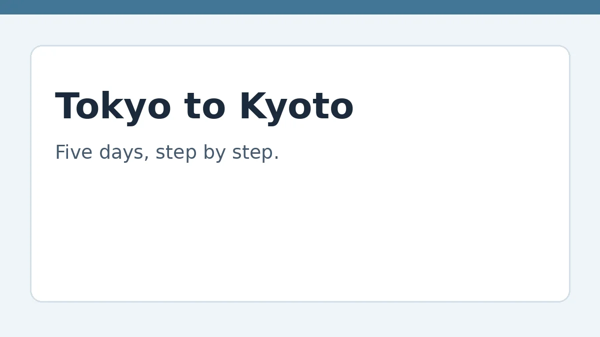

5-Day Tokyo and Kyoto Travel Guide, Step by Step

Sales page — the full guide is not on this page. The information itself is held privately and delivered to buyers only. What follows is what the guide covers and who it is for, so you can decide whether to buy it when checkout is live.
Five days is enough to see Tokyo and Kyoto well if each day has one area, one main task, and time to read the signs around you. This guide gives routes, reading skills, and manners — not prices, hotel names, or timetables, because those change. Check current transport times and opening information on the day you travel.
Who this is for
First-time or careful travellers who want one area and one main task per day, plus the skills to read signs and menus.
What's inside
The full guide, held in a private store and delivered to buyers only, covers:
- Before you go: planning steps
- Day 1 — Tokyo: arrive and orient
- Day 2 — Tokyo: central sights and signs
- Day 3 — Tokyo: markets, menus, and manners
- Day 4 — Travel to Kyoto
- Day 5 — Kyoto: temples, streets, and leaving well
- Reading signs, menus, and manners — the skills that carry the trip
Price, to decide only. No checkout is live, and no payment is being taken.
How you will get it, when it is live
Buyers will receive the full guide through a private delivery link with a buyer key. That delivery is not live yet — this page is the sales page only, and the full information is not published here.
Related guides
If you want to be understood in English on the trip, see American pronunciation for Japanese speakers. If you write about the trip, see how to grow a blog audience. If you use referral offers to help fund travel, check the terms first with the referral bonus checklist.